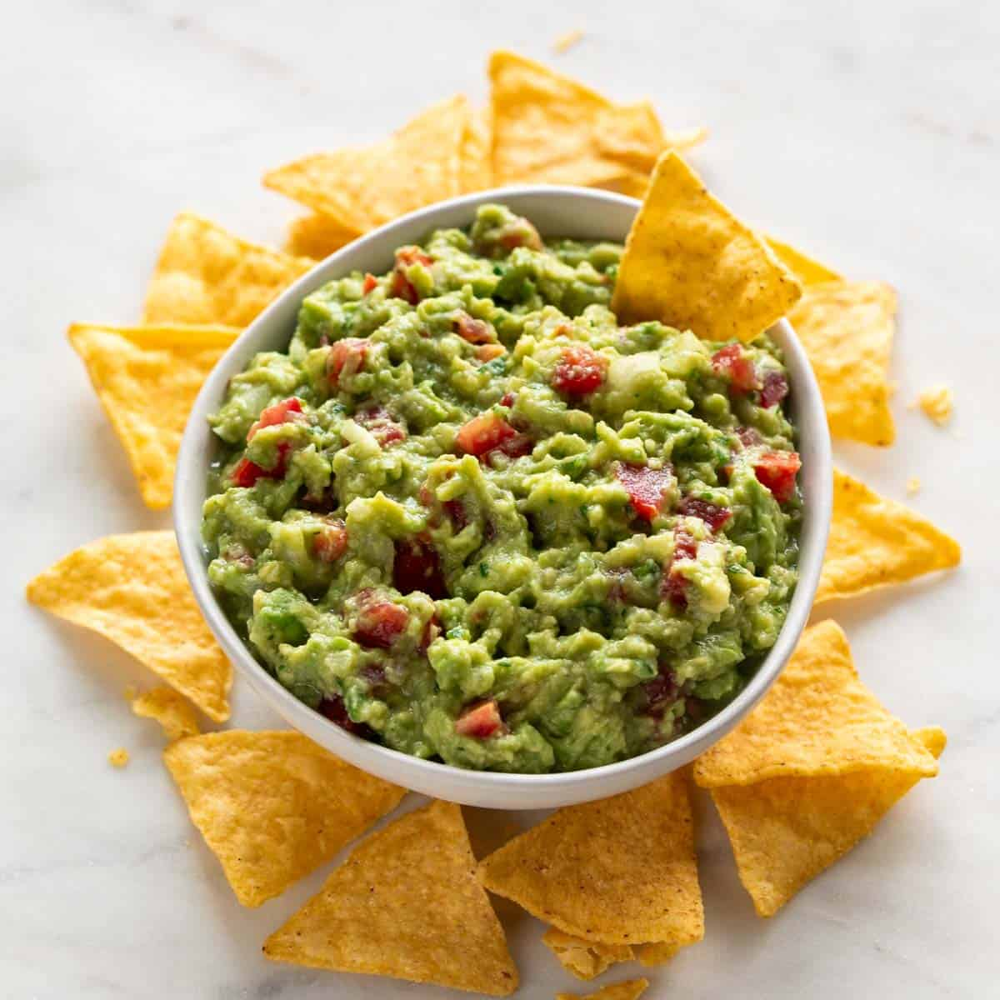

Guacamole

Description
Guacamole typically starts with ripe avocados that are peeled, pitted, and mashed to a smooth or chunky
consistency, depending on personal preference. To enhance the flavor, lime juice is often added, which not only
adds a tangy taste but also helps prevent the avocados from browning.
Ingredients
- Ripe avocados
- Lime juice
- Onion (usually red or white), finely minced
- Tomato, diced
- Cilantro (also known as coriander), chopped
- Garlic, finely minced or pressed
- Jalapeño or serrano pepper, finely chopped (optional, for heat)
- Salt and pepper to taste
Steps
- Gather all the necessary ingredients, including ripe avocados, lime juice, onion, tomato, cilantro, garlic,
jalapeño or serrano pepper (if using), salt, and pepper.
- Cut the avocados in half lengthwise and remove the pits. Scoop the avocado flesh into a mixing bowl using a
spoon.
- Use a fork or potato masher to mash the avocado until it reaches your desired consistency. Some people
prefer a smooth guacamole, while others prefer it chunky.
- Squeeze lime juice over the mashed avocado to prevent browning and add flavor. Start with a tablespoon of
lime juice and adjust to taste.
- Add finely minced onion, diced tomato, chopped cilantro, minced garlic, and finely chopped jalapeño or
serrano pepper (if using) to the mashed avocado.
- Season the guacamole with salt and pepper to taste. Start with a small amount and adjust according to your
preferences.
- Use a spoon or spatula to mix all the ingredients together until well combined. Taste and adjust seasoning
if necessary.
- Let it Rest: For the flavors to meld together, you can cover the guacamole with plastic wrap and let it sit
at room temperature for about 30 minutes before serving.
- Transfer the guacamole to a serving bowl. Garnish with additional chopped cilantro or a slice of lime if
desired. Serve with tortilla chips, tacos, quesadillas, or your favorite Mexican dishes.